Inhalt Index DeskTop Bronstein

 Funktionentheorie Funktionen einer komplexen Veränderlichen Konforme Abbildung Superpositionsprinzip
Funktionentheorie Funktionen einer komplexen Veränderlichen Konforme Abbildung Superpositionsprinzip


Die Erzeugung neuer Felder aus den komplexen Grundpotentialen kann außer durch Addition auch durch Integration mit Hilfe von Belegungsfunktionen erfolgen.
| Beispiel | ||
|
Auf einem Linienstück l sei eine Wirbelbelegung mit der Dichte 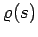 vorgegeben. Für die Ableitung des komplexen Potentials ergibt sich dann ein Integral vom CAUCHYschen Typ:
wobei 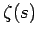 die komplexe Parameterdarstellung der Kurve l mit der Bogenlänge s als Parameter ist. |
Sind zwei Felder mit den Potentialen 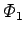 und 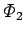 zu überlagern, dann zeichnet man ihre Potentiallinienbilder 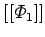 und 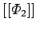 derart, daß von einer Potentiallinie zur nächsten der Wert des Potentials in beiden Systemen um denselben Wert h springt, und orientiert die Linien so, daß die höheren  -Werte jeweils zur Linken liegen. In dem von und gebildeten Netz ergeben die Linien, die im Zuge der Maschendiagonalen verlaufen, das Potentiallinienbild 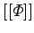 eines Feldes, dessen Potential 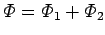 oder 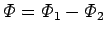 ist. Das Bild 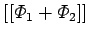 erhält man, wenn die orientierten Maschenseiten gemäß der linken Abbildung wie Vektoren addiert werden, das Bild 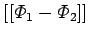, wenn sie wie Vektoren subtrahiert werden (rechte Abbildung).
-Werte jeweils zur Linken liegen. In dem von und gebildeten Netz ergeben die Linien, die im Zuge der Maschendiagonalen verlaufen, das Potentiallinienbild 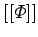 eines Feldes, dessen Potential 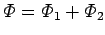 oder 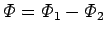 ist. Das Bild 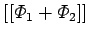 erhält man, wenn die orientierten Maschenseiten gemäß der linken Abbildung wie Vektoren addiert werden, das Bild 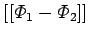, wenn sie wie Vektoren subtrahiert werden (rechte Abbildung).
Im zusammengesetzten Bild springt der Wert des Potentials beim Übergang von einer Potentiallinie zur nächsten ebenfalls um den Wert h (Stufenwert).
| Beispiel |
|
Feld- und Potentiallinienbild einer Quelle und einer Senke mit dem Intensitätsverhältnis |